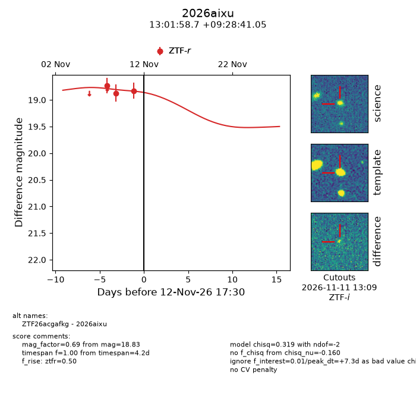
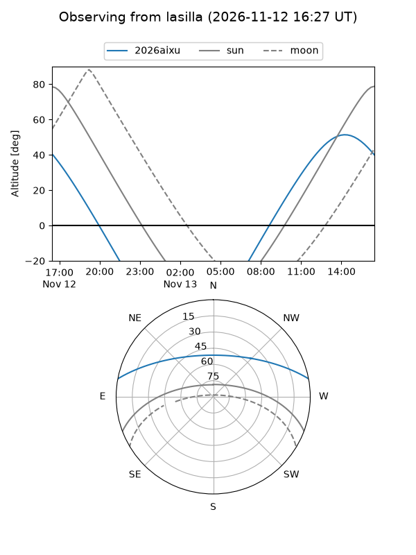
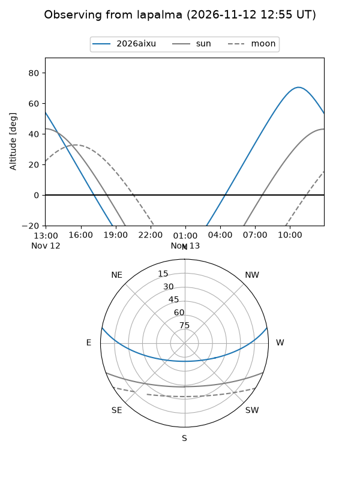
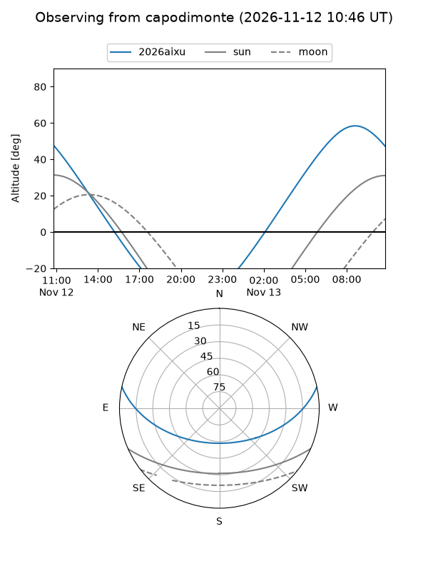
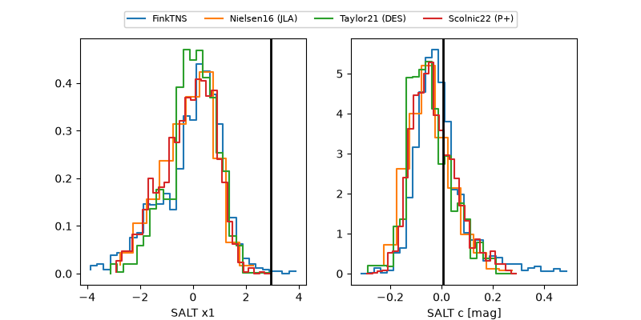

2026aixu
Target 2026aixu at 2026-11-12 17:36
Aliases and brokers:
FINK-ZTF: ztf.fink-portal.org/ZTF26acgafkg
Lasair-ZTF: lasair-ztf.lsst.ac.uk/objects/ZTF26acgafkg
ALeRCE-ZTF: alerce.online/object/ZTF26acgafkg
YSE-PZ: ziggy.ucolick.org/yse/transient_detail/2026aixu
TNS name: wis-tns.org/object/2026aixu
Direct TNS query: direct search
alt names
ZTF26acgafkg (ztf,fink_ztf)
2026aixu (tns,yse)
Coordinates:
equatorial (ra, dec) = 195.4947,+9.47807
equatorial (HMS+DMS) = 13:01:58.72,+09:28:41.05
galactic (l, b) = (311.4515,+72.17523)
Flags:
peak dt: +7.3
Photometry:
last ztfr=18.83
3 ztfr detections
Lightcurve

Visibility



Additional plots
